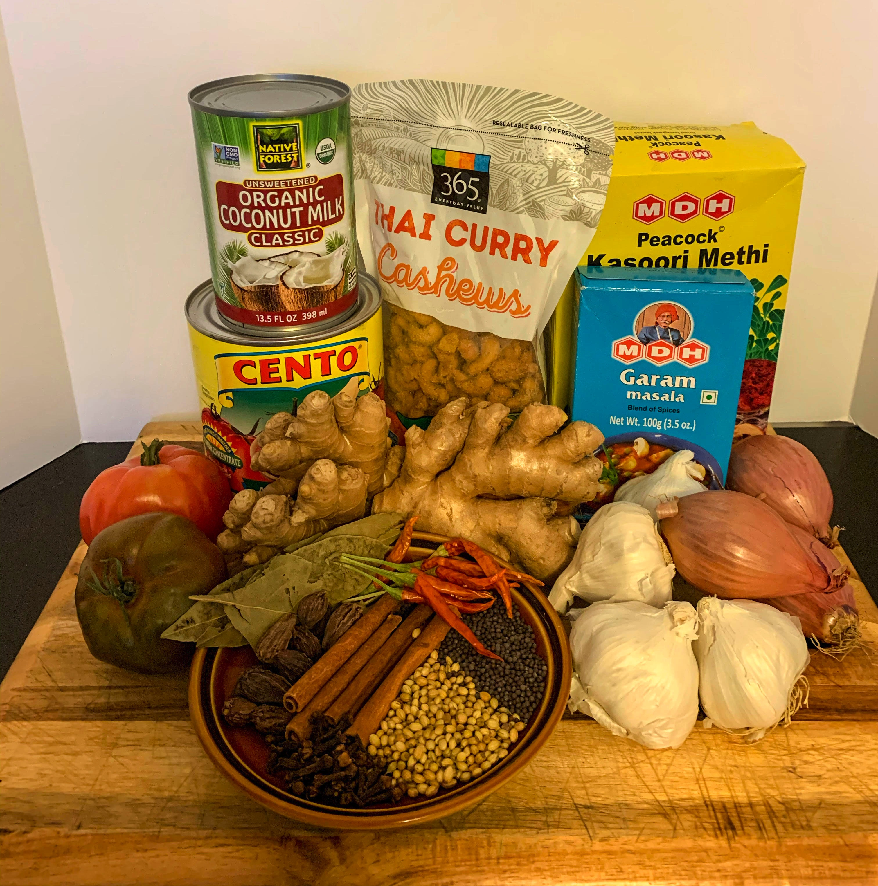

Ingredients
A Korma typically contains braised meat in a sauce thickened with ground nuts, coconut milk and cream or yogurt.
Regional variations and ingredients provide endless opportunities to create new dishes with the korma style of cooking.
In this recipe, we will be preparing a Korma Sauce made with Curry Paste, Tomato, Cashew and Coconut.
This sauce is perfect for braising chicken and creating a rich and flavorfol Shahi Murgh Korma
This dish contains many of the ingredients typical of the Mughlai Cuisine, and can be the centerpiece for any Moghul-inspired meal.
The Cashews I used in this recipe are 365 EVERYDAY VALUE® Thai Curry Cashews.
They are perfectly seasoned to compliment the flavor profile of this recipe.
If you look below, you'll find a link to purchase Thai Curry Cashews in the ingredients list.
For the Sauce
The Spices
- Whole Cinnamon
- Whole Clove
- Whole Cardamom
- Whole Coriander Seed
- Whole Mustard Seed
- Whole Bay Leaf
- Whole Cumin Seeds
- Coriander Powder
- Turmeric Powder
- Mild Chilli Powder or Deggi Mirch
- Garam Masala
- Kasoori Methi
Click Here to Learn How to Make a Korma Sauce
search